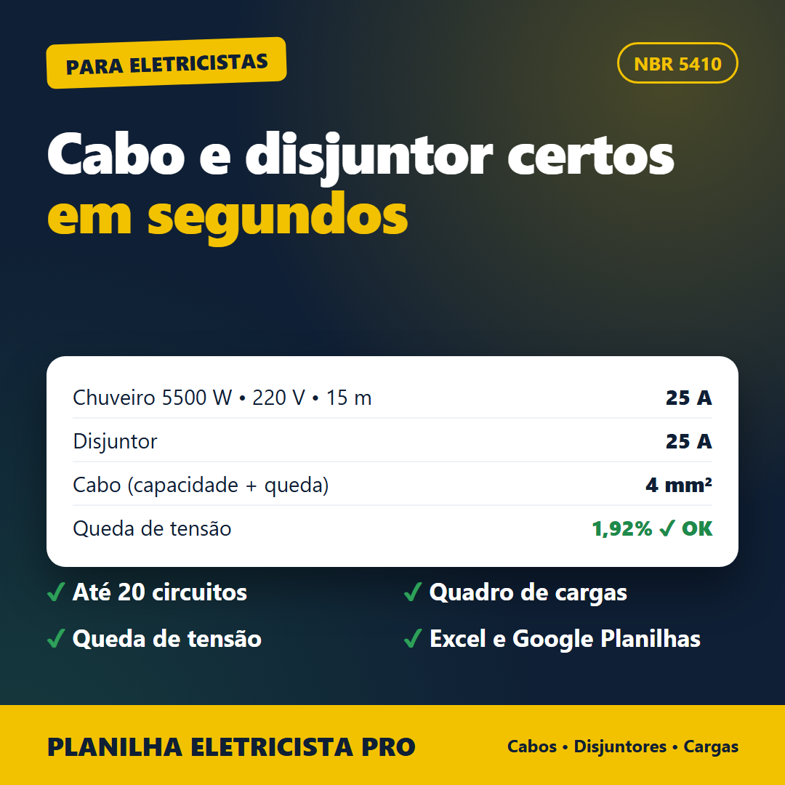

Informe potência, tensão e distância. A planilha calcula a corrente, escolhe o disjuntor, dimensiona o cabo por capacidade e queda de tensão e avisa quando algo está fora do limite.

Links de compra em breve.
Pagamento único. Garantia de 7 dias.
Não. É uma ferramenta de apoio. Todo projeto deve ser validado por profissional habilitado e seguir a NBR 5410 vigente.
Não. O cálculo é simplificado (resistência do cobre). Em cabos grandes ou circuitos longos, confirme com o método completo.
Capacidade de condução da Tabela 36 da NBR 5410 (reprodução de guia de fabricante) e fatores usuais das tabelas 40 e 42. Confira na norma antes de usar em projeto.
Não. Você preenche células amarelas e o resultado aparece sozinho.